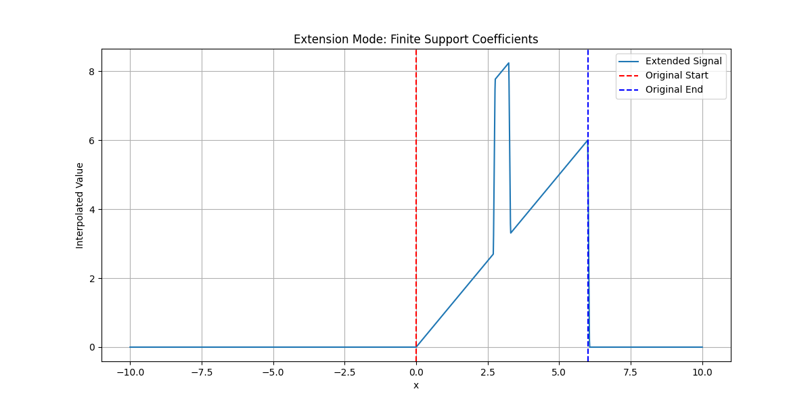
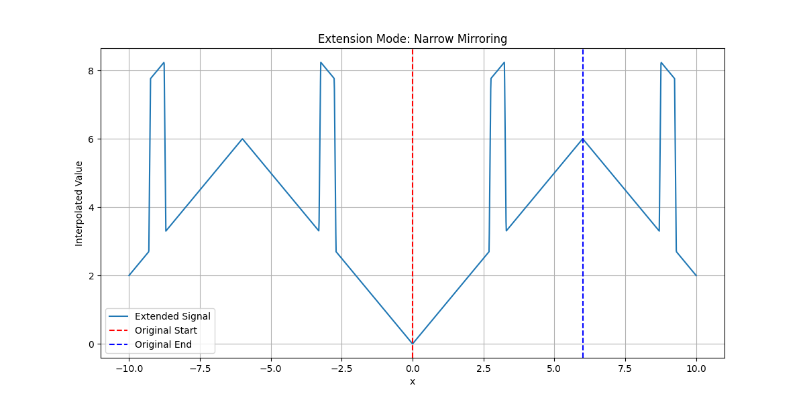
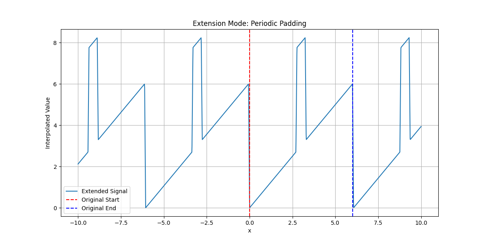

Extension Modes#
Plotting different extension modes of signals.
Imports and Utilities#
Visualize how the extension modes allow one to control the values that a signal is assumed to take outside of its original domain. Generate a signal that is mostly linear but includes a “bump.”
import numpy as np
import matplotlib.pyplot as plt
from splineops.spline_interpolation.tensor_spline import TensorSpline
x_values = np.linspace(0, 6, 101)
def create_signal_with_bump(x_values, bump_location=3, bump_width=0.5, bump_height=5):
linear_part = x_values
bump = np.where(
(x_values > (bump_location - bump_width / 2))
& (x_values < (bump_location + bump_width / 2)),
bump_height,
0,
)
return linear_part + bump
def plot_extension_modes_for_bump_function(mode_name, x_values, title):
plt.figure(figsize=(12, 6))
data = create_signal_with_bump(x_values)
tensor_spline = TensorSpline(
data=data, coordinates=(x_values,), bases="linear", modes=mode_name
)
eval_x_values = np.linspace(-10, 10, 2000)
extended_data = tensor_spline.eval(coordinates=(eval_x_values,))
plt.plot(eval_x_values, extended_data, label="Extended Signal")
plt.axvline(x=x_values[0], color="red", linestyle="--", label="Original Start")
plt.axvline(x=x_values[-1], color="blue", linestyle="--", label="Original End")
plt.title(title)
plt.xlabel("x")
plt.ylabel("Interpolated Value")
plt.grid(True)
plt.legend()
plt.show()
Finite-Support Coefficients#

Narrow Mirroring#

Periodic Padding#

Total running time of the script: (0 minutes 0.311 seconds)